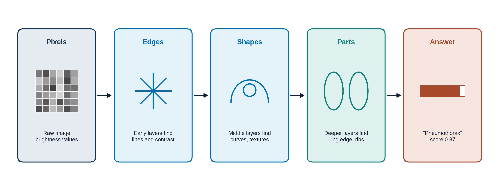

Overview
In Lesson 1.1 you saw that a machine learning model learns from examples instead of following a rule. This lesson opens the box: what "learning" means for a computer, the three main ways models learn, what a neural network is, and the most common way learning goes wrong. About 15-20 minutes.
By the end of this lesson you can:
- Describe training as: guess, compare with the answer, adjust, repeat.
- Explain supervised, unsupervised and reinforcement learning in one line each.
- Describe a neural network as layers that build simple features into complex ones.
- Explain overfitting with the exam-cramming analogy.
A model is a machine with knobs
Picture a machine that takes in a chest X-ray and puts out a number between 0 and 1: how likely it is that the film shows a pneumothorax. Inside are a huge number of adjustable knobs, called parameters. Each knob changes how much attention the machine pays to some part of the image.
At the start the knobs are set randomly, so the answers are random too. Training is the process of turning the knobs, a tiny bit at a time, until the answers match the labels. PTX-Detect, like most image models, has millions of knobs. Nobody turns them by hand; the computer does it automatically.
The training loop
Step through how PTX-Detect is trained. The same four steps repeat thousands of times.
Try it yourself (about 3 minutes): open Teachable Machine, choose "Image Project", and train a model with your webcam: for example, class 1 is you holding a pen, class 2 is you without one. Give it 30-50 pictures of each, press Train, and test it. You have just run the training loop. Keep the tab open: in Lesson 1.5 you will try to fool it.
Optional: TensorFlow Playground lets you watch a small network train in your browser.
Three ways to learn
Drag each project into the kind of learning it uses. On a phone, tap a card and then tap a box.
Most radiology AI you will meet is supervised. That is why labels matter so much, which is the topic of Lesson 1.3.
Neural networks and deep learning
A neural network is a particular design for the knob machine. It is built in layers. Each layer takes what the layer before found and combines it into something a little more complex. With images it works roughly like this:

"Deep" learning just means a network with many layers. Nobody tells the layers to look for edges or ribs; that structure emerges during training. Two names you will hear:
- Convolutional neural networks (CNNs) are designed for images. They scan small patches across the picture, which suits X-rays, CT and MRI.
- Transformers are the design behind large language models such as ChatGPT, and they are now also used for images.


Watch the StatQuest video first. The 3Blue1Brown video goes deeper into how layers work; watch it if you want the full picture.
Overfitting: memorizing instead of learning
You know two kinds of exam preparation. One student understands the topic. Another memorizes the answers to last year's practice questions. Both ace the practice set. Only one passes the real exam.
Models can do the same thing. With millions of knobs, a model can memorize the exact training films, including irrelevant details, instead of learning what a pneumothorax looks like. This is called overfitting. The model looks excellent on its training data and disappoints on new patients.

This is why a model must always be tested on data it never trained on. How that data is set aside is covered in Lesson 1.3.
Knowledge check
Answer each question to continue. Any answer is fine; read the explanation.
Which order describes one round of training?
The model first guesses, then the guess is compared with the label to get the error, then the knobs are nudged to reduce that error, and the loop repeats with the next example.
Which type of learning needs every training example to come with the right answer?
Supervised learning learns from labeled examples, like PTX-Detect's X-rays marked yes or no. Unsupervised learning has no labels, and reinforcement learning learns from rewards rather than answers.
A model scores 100% on its training films but only 60% on new films. What most likely happened?
A large gap between training and new data is the classic sign of overfitting. The model memorized its practice set instead of learning a pattern that carries over to new patients. Adding knobs usually makes this worse.
Key takeaways
- A model is a machine with many adjustable knobs (parameters). Training turns them until its answers match the labels.
- The training loop: guess, compare, adjust, repeat.
- Supervised learning uses labels; unsupervised finds groups; reinforcement learns from rewards. Most radiology AI is supervised.
- Neural networks build simple features into complex ones, layer by layer. "Deep" means many layers.
- Overfitting is memorizing instead of learning. Only testing on new data reveals it.
Go further (optional)
- Supervised learning (Google, short article)
- Machine Learning Fundamentals: Bias and Variance (StatQuest, YouTube, the technical side of overfitting)
- TensorFlow Playground (interactive)
Next lesson: what PTX-Detect learned from, and where its labels came from.